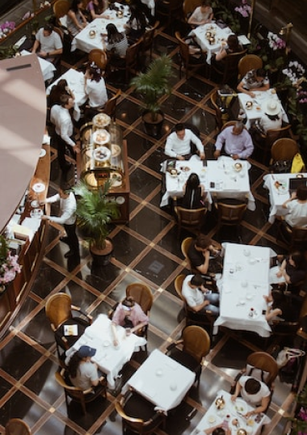
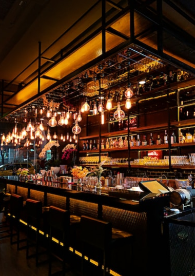
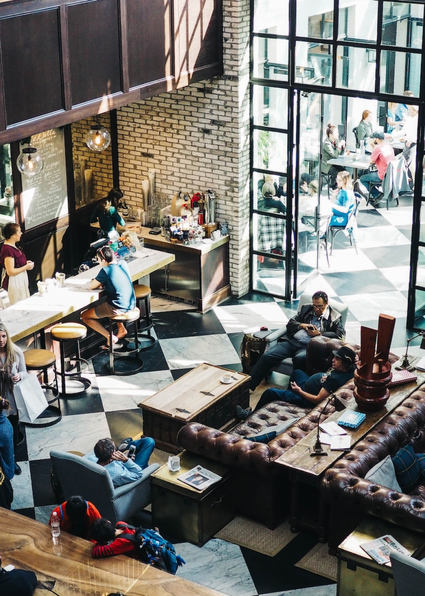
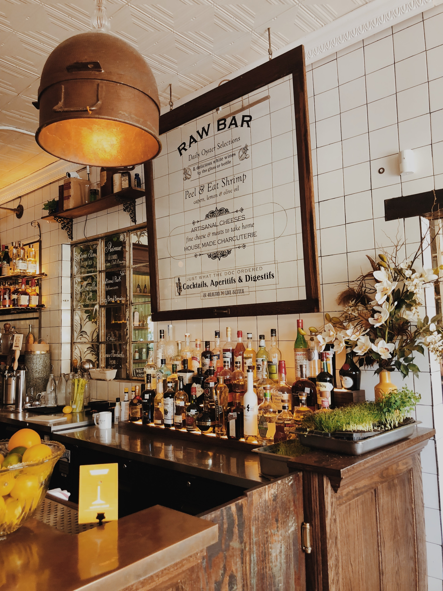
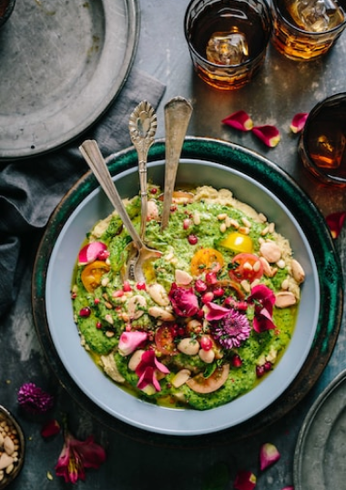
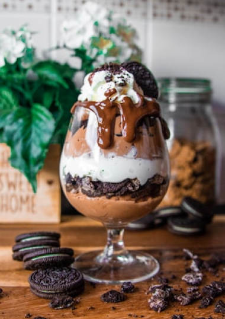

Notre histoire
Depuis nos débuts en janvier 2023 avec un espace
situé dans le 12 arrondissement
de paris,
la fouchette d’or est l’un des meilleurs restaurants gastronomique de France. Présenté par le chef Frédéric Sananes, la fourchette d’or se concentre sur des plats de
qualités pour une clientèle de qualité. S’inspirant de la gastronomie classique française, vous allez découvrir des plats typique du terroir revisité à la sauce du chef. Le développement de la fourchette d’or à été animé par l’amour pour la cuisine et le désir de vouloir satisfaire notre clientèle.
la fouchette d’or est l’un des meilleurs restaurants gastronomique de France. Présenté par le chef Frédéric Sananes, la fourchette d’or se concentre sur des plats de
qualités pour une clientèle de qualité. S’inspirant de la gastronomie classique française, vous allez découvrir des plats typique du terroir revisité à la sauce du chef. Le développement de la fourchette d’or à été animé par l’amour pour la cuisine et le désir de vouloir satisfaire notre clientèle.
Notre espace
Venez découvrir notre splendide restaurant situé dans le 12
arrondissement. Ce dernier
offre une vue sur la magnifique
école de l’esgi et son splendide Auchan qui propose des denrées alimentaires de type rare.
école de l’esgi et son splendide Auchan qui propose des denrées alimentaires de type rare.
Notre restaurant dispose également d’une terrasse pour ceux
qui souhaitent mangés a
pleine air.



Notre cuisine
Venez découvrir notre splendide restaurant situé dans le 12
arrondissement. Ce dernier
offre une vue sur la magnifique
école de l’esgi et son splendide Auchan qui propose des denrées alimentaires de type rare.
école de l’esgi et son splendide Auchan qui propose des denrées alimentaires de type rare.
Notre restaurant dispose également d’une terrasse pour ceux
qui souhaitent mangés a
pleine air.


